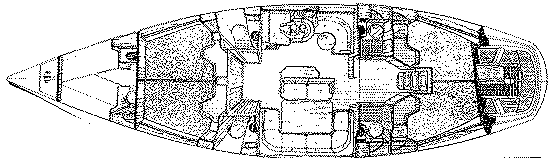

![[Arctic Adventours logo]](/graphics/AA.gif)
The Yacht «Arctic Explorer» and Its Crew
S/Y Arctic Explorer is a Beneteau Idylle (15.50"), built in 1987. This charter
version is amongst the most tested series of boats ever built. ( The world's
biggest charter boat operator, Moorings have used this model as a base for
their fleet, ). The ship has been supplied with all feasible equipment for
operating in these waters and conditions.

First Idylle, inside
Technical equipment:
Perkins 4.236 80 HP main engine
Autohelm ST7000, wind, close haul & TTridata and remote.
Raytheon 11x, Radar, open scanner
Koden GPS & Navstar 2000 (back up)
3 Echo-sounders
Storno 6000 cellular phone
Navico RT6500 s VHF
Webasto 80 DW, central heater distribution to cabins & toilets.
Stereo rack
Security equipment:
2 Fleets 6 pers. (C cat. equipped, dbl.floor,dbl.roof)
Em. receiver Locat LTD26
Pyrotechnical suitcases
Regatta (Helly Hansen) survival suits & misc. safety vests, belts & lines for all passeng.
Register: Norwegian Ordinary Shipregister,Svolvær.

Fishing is a part of a lifestyle onboard, like Vittorio here with a
catfish of app. 5 kg.
Cut your fingers off easily (the catfish I mean).
About the skipper
Knut Jørstad is the owner and skipper of the 'Arctic Explorer', and has
been operating in different Arctic areas for 10 years. KJ built up the
first touroperator company at the Svalbard archipelago . This activity
has given 117 navigation's above 80 dg. north, though sounding like
tram driving, has given an experience both wide and deep. With two attempts
to reach Scoresbysound (Greenland east coast. Tilman tried four), visits to
Iceland and Siberia KJ is undoubtly one of the most experienced persons to
travel with at 'the top of the world'. Resident in Lofoten for the last 8
years, sailing up and down the coast of Northern-Norway. Working in
Serengeti (Tanzania) in the winter, to get the nose warmed up and a goutish
body prepared for a new season.

«The day I loose the curiosity, I quit»
![[Oslonett Home]](/graphics/home.gif)
![[Oslonett Marketplace]](/graphics/market.gif)
![[Arctic Adventours Home]](/graphics/AA-icon.gif)